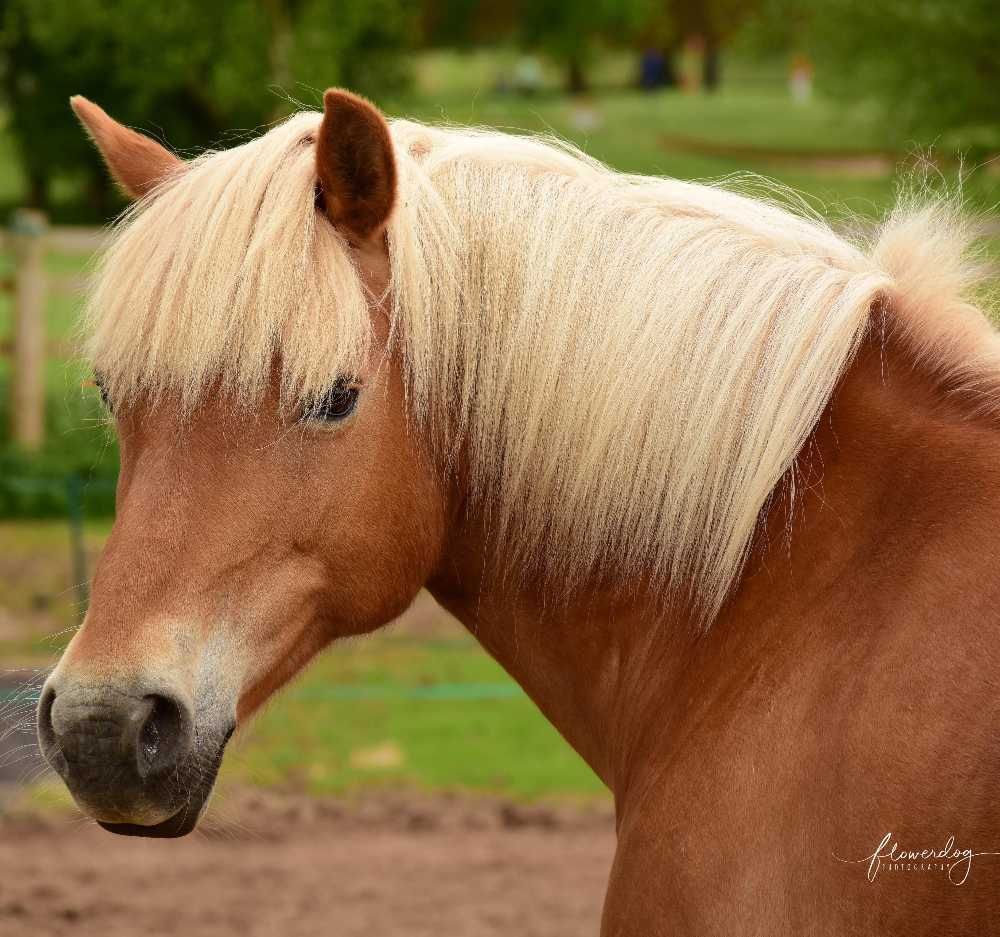
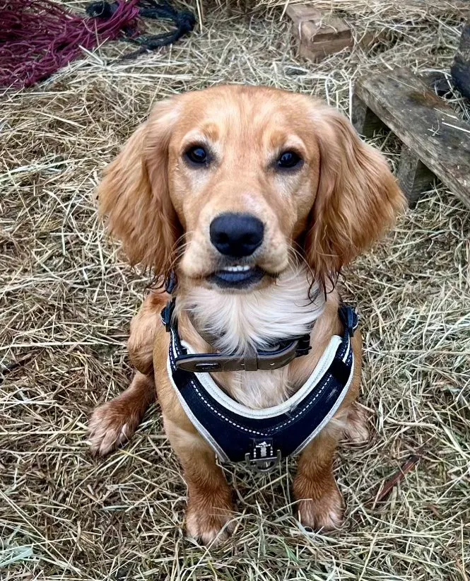

Becca
Becca embodies warmth from the moment you meet her. Kind, caring, and deeply genuine, she is often the mother of the herd, offering quiet reassurance and steady support. Those who feel anxious, sad, or a little lost are naturally drawn to her. She especially loves working with children and young people.

Crystal
Crystal arrived alongside Becca in 2015, full of mischief, humour, and big personality packed into a tiny body. She loves being brushed and pampered, but she's never shy about letting you know when something isn't to her liking. Wonderfully expressive and always honest. Crystal never fails to make people smile.
Harley
Harley joined us as a yearling and is now 12 years old. Full of attitude, curiosity, and charm, which is probably why so many teenagers love working with her. She's mischievous, funny, and always eager to be involved. Harley loves to be the centre of attention and has a wonderful way of drawing everyone in.

Roo
Roo is a tiny Shetland pony with a huge personality and an even bigger heart. Gentle, kind, and full of warmth, she loves being brushed, pampered, and spending time with children. Her calm nature helps children feel safe and able to connect, often helping them express feelings without needing words.

Marty
Marty is a happy-go-lucky chap with a heart as big as his personality. Full of fun and always ready for an adventure, he loves heading out on hacks with the girls. With his kind nature and gentle spirit, he adores being brushed, fussed over, and chatted to.

Roxy
Roxy has a natural gift for connecting with people of all ages. She has an intuitive way of knowing what each person needs; sometimes it's play and engagement, other times it's quiet companionship. She offers it with her whole heart.

Ace
Ace approaches every day with boundless enthusiasm and a huge, affectionate heart. He works beautifully with clients who have higher energy. Together, they learn how to slow down, settle, and find calm. Full of fun, curiosity, and classic puppy antics.

Doris
Doris has a habit of appearing out of nowhere to join a session, much to everyone's delight. You might meet her in the woods as you return from the ponies, or she may greet you as you arrive or leave. A little ray of sunshine who adds an unexpected but very welcome bonus.